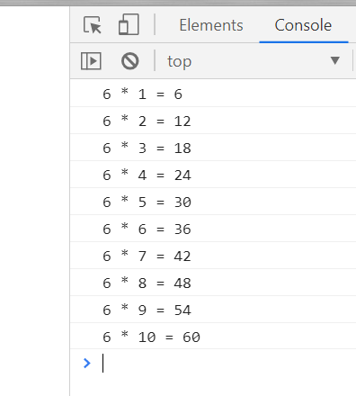
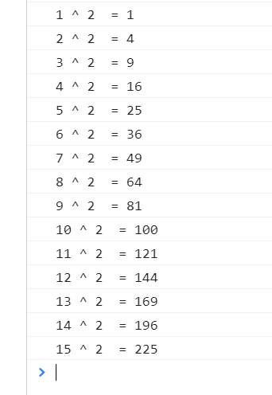
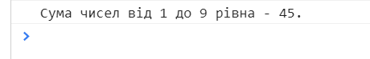

Тема 6. Завдання 2.1
Запитайте у користувача число (prompt). Виведіть таблицю множення від 1 до 10 для цього числа. Використайте цикл for.

Тема 6. Завдання 2.2
Виведіть квадрати чисел від 1 до 15. Використайте цикл for.

Тема 6. Завдання 2.3
Запитайте у користувача число. Виведіть суму всіх чисел від 1 до вказаного числа. Використайте цикл for.
